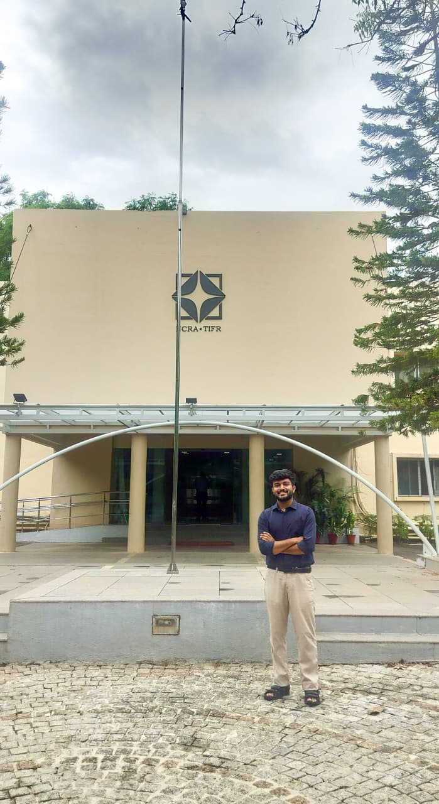

Quasar Accretion Disk Variability
Studying Type-I quasar accretion disk variability using ZTF time-series photometry and SDSS survey data as part of my Master's thesis.

I'm Harikumar N — I study how Active Galactic Nuclei change brightness over days, months, and years, and what that flicker reveals about the accretion disks and black holes powering them.
I'm a final-year Integrated M.Sc. Physics student at NIT Rourkela, currently working as a Master's Thesis Intern at the National Centre for Radio Astrophysics (NCRA-TIFR). My work sits at the intersection of time-domain astronomy and AGN physics — using survey photometry, archival UV spectroscopy, and reverberation-mapping techniques to understand how light from the inner regions of quasars varies, and what that tells us about the accretion disk and black hole driving it. Beyond research, I bring astronomy closer to the public through astrophotography outreach associated with AstroNITR, (a student led Astronomy and Astrophysics club) capturing the Moon, Jupiter, and Saturn, and creating opportunities for hundreds of students to experience the night sky through a telescope for the very first time.
The same photons that leave a quasar's accretion disk carry a record of its size, its geometry, and its history, if you watch them flicker for long enough. Working thesis — AGN variability, NCRA-TIFR, 2026
From UV archives from IUE, to infrared calibration for Starflux and to the current thesis on quasar accretion disks at NCRA — each experience has broadened my understanding of astrophysics, connecting observations, data analysis, and physical models to explore the nature of the Universe.
Studying Type-I quasar accretion disk variability using ZTF time-series photometry and SDSS survey data as part of my Master's thesis.
Validated a structured catalog of absolute spectral-flux calibrators for VLTI/MATISSE and future infrared instruments, comparing Cohen et al. calibrators against new flux models in Python.— now a published paper.
Modelled 53 archival IUE UV spectra of Seyfert galaxy ESO 141–G55, using JAVELIN and HEASOFT to quantify continuum and line-flux variability — now a published paper.
Results from a 3-year ultraviolet monitoring campaign of the broadline Seyfert 1 galaxy ESO 141–G55 using the International Ultraviolet Explorer (IUE), modelling individual spectra to trace continuum and emission-line variability.
doi.org/10.1002/asna.70093